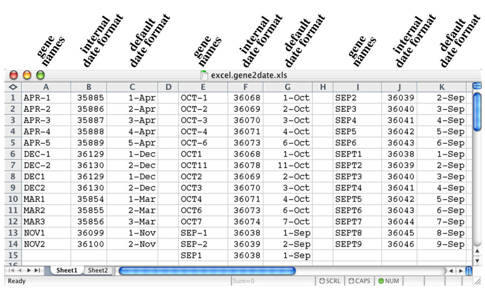

Data Formatting
GIGO is an acronym that stands for “Garbage In, Garbage Out”, and this is often a mantra to remember when gathering data. The same goes for entering and storing data in a spreadsheet. Often, the first point of error for any analysis is at the data entry stage. This section will show you the best practices of data storage and why this is important for your analyses, whether you are analyzing disease progress, fungicide resistance, or complex bioinformatic data. Much of this is based off of the Data Carpentry module “Using Spreadsheet Programs for Scientific Data” designed by Christie Bahlai and Aleksandra Pawlik. Please refer to the previous link if you need any more information.
Isn’t Excel/OpenOffice/Google Sheets good enough?
No (Zeeberg et al. 2004). 
For data entry, Excel is a fantastic program because it’s intuitive to enter data into cells, but Excel also reinforces a lot of bad habits that can make your data inaccessible to analyses down the line.
How should I format my data?
It all depends on what your data is, but ultimately there are a few guidelines or best practices to follow:
- Place all data on one sheet in a contiguous rectangle
- One datum per cell
- Saved as a flat text file (e.g.
.csv,.tsv,.txt) - Observations in rows (note: 1 sample ≠ 1 observation)
- Variables in columns (e.g. Treatment, Replicate, Response)
- Consistent formatting of missing data (use either a blank cell or
NA) - NEVER merge cells
The rest of this section will show some examples of good and bad data formatting related to plant pathology. For a more detailed insight on data formatting from someone who has A LOT of experience with different data formats, take a look at Karl Broman’s Data Organization Tutorial. He covers the following topics:
- Be consistent
- Write dates as
YYYY-MM-DD - Fill in all of the cells
- Put just one thing in a cell
- Make it a rectangle
- Create a data dictionary
- No calculations in the raw data files
- Don’t use font color or highlighting as data
- Choose good names for things
- Make backups
- Use data validation to avoid data entry mistakes
- Save the data in plain text files
- Other things to avoid
Same Data, Different Formats
In the following examples, we will use data from a stripe rust case study provided by APS. Here is the link to the case study.
The good: Following the rules outlined above
There are a few flavors of well-formatted data presented here, but they all have the above rules in common and, thus, can all easily be converted to and from each other within R and other computer programs.
Long data
Long data is so named because there are typically a vast number of rows, each with a single datum and its associated treatments, creating tables that tend to have more rows than columns.

Wide data
Wide data is the opposite: each row has data for all treatments and each treatment is a column. It’s called wide data because the number of columns tends to exceed the number of rows.

An appropriate mixture of long and wide data
Of course, recording observations in either long or wide data exclusively is not necessarily intuitive for the person entering the data, so a combination of these can be beneficial. Also, tools exist to convert between long and wide tables so data can be entered however it is most convenient. The example below encodes two columns for data: one for fungicide treated and the other for untreated. The date and cultivar are specified as they are in the long data in the first two fields.

The bad: Storing data in excel and using multiple sheets
Saving data in Excel is a recipe for disaster, especially if you are storing dates.
Multiple sheets
One thing that is commonly done is to store data across multiple sheets. While this may seem to help organize, it prevents you from storing your data in a flat text format and makes it more difficult to read it in to R (although it is possible with the readxl package).

The ugly: multiple tables, color-coding, etc…
Ugly data is, well, ugly. At least with bad data, it can be read into R. With ugly data, there is little to no hope of getting it into R without reformatting (and at that point, you might as well convert it into good data :).
Small Multiples
Separate tables within the spreadsheet with merged cells, numbers and spaces within headers, and inconsistent formatting (different names for columns, zeroes vs blanks).

Resources
There are a few ways to manage data without the use of Excel or Google Sheets, and one way is to use an editor that specifically works on CSV files. A couple of good examples are:
- Comma Chameleon
- Table Tool (OSX only)
These will allow you to enter your data and that’s about it. No bells, whistles, automatic reformatting, or guessing on the editors side, giving you complete control.
Try it!
Question 1
Take a look at the data set in the Wide Data section above (csv format). It’s formatted as wide data, but is there anything that could be improved?
Question 2
Examine the following data sets:
- Fungicide Data (xls format)
- Temperature Data (xlsx format)
Answer the following questions:
- What categories would you put these data in?
- What formatting mistakes do you see?
- Reformat one of these sheets into a proper format.
Glossary
flat text file: a text file to hold data in a tabular format, where cells are separated by a common character such as comma or tab. Common formats are csv and tsv.
References
Zeeberg, Barry R, Joseph Riss, David W Kane, Kimberly J Bussey, Edward Uchio, W Marston Linehan, J Carl Barrett, and John N Weinstein. 2004. “Mistaken Identifiers: Gene Name Errors Can Be Introduced Inadvertently When Using Excel in Bioinformatics.” BMC Bioinformatics 5 (1). BioMed Central Ltd: 80. http://bmcbioinformatics.biomedcentral.com/articles/10.1186/1471-2105-5-80.